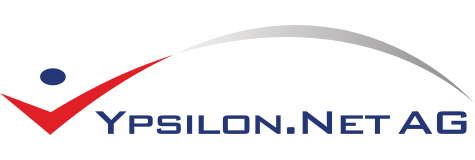

We are looking for a self dependent, flexible, resilient Network Administrator who will be a key member of the IT Team in Frankfurt a.M and report to the Director of IT. It is a hands-on technical position focusing on the support and maintenance of the network infrastructure, server hardware/software setup and maintenance.
We offer long term employment with flexible working hours and can also provide access to exclusive touristic offers only available for travel business employees.
Police clearance certificate will be required as part of the infrastructure is considered high security.
Ypsilon is a global provider of modular internet travel technology for the travel industry including airlines, consolidators, travel providers and travel agencies. With customers in over 20 countries worldwide, servicing in excess of 90,000 web based agents. Corporate headquarter is based in Frankfurt, with additional development offices in Leipzig, Germany and Breslau, Poland and a sales and support team in Burgess Hill, UK.
Ypsilon.net is a PCI DSS level 1 certified company.
Achim Klenz <jk@ypsilon.net> or Steffen Oschatz <so@ypsilon.net>
+49 6109 50510
